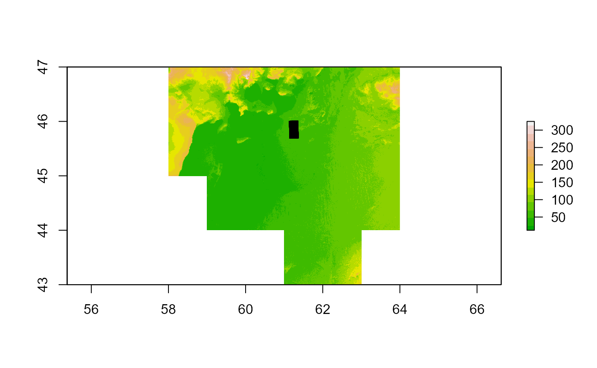

Getting_raster_values_form_a_Digital_Elevation_Model.RmdIn order to calculate the ground area that a drone has recorded we need to know the height of the drone. The internal altitude measurement may not be accurate. If this is the case you can use this script as a template to get the correct altitude from a Digital Elevation Model (known as a DEM).
First you will need to load the {Kulan} package and a few additional packages to help get the altitude from a DEM.
library(Kulan)Then you need to import your flight file. You can use the inbuilt datasets in the package for this example.
df=Kulan::All_Flight_Left
df %>%
head() %>%
DT::datatable(options=list(scrollX = TRUE))We need the dataframe to be formatted as an R data.frame in order to manipulate it later on.
df <- as.data.frame(df)Then we need to find the geographic projection of our dataset and we can create a spatial points dataframe.
prj_dd <- "+proj=longlat +ellps=WGS84 +datum=WGS84 +no_defs"
dfsp <- sp::SpatialPoints(df[,c(5,4)], proj4string = sp::CRS(prj_dd)) #it needs to have Longitude first and Latitude second!!!!
df_spdf <- sp::SpatialPointsDataFrame(Flight1_left, proj4string = sp::CRS(prj_dd), data = df)
#> Warning in sp::SpatialPointsDataFrame(Flight1_left, proj4string = sp::CRS(prj_dd), : If the coords argument is a SpatialPoints object, set its CRS first;
#> the proj4string argument to this function is ignored.
Flight1_left <- sp::SpatialPoints(dfsp, proj4string = sp::CRS(prj_dd))Now we need to import our regional DEM model. These are usually in the Raster format. You will need to add a raster file from your local computer.
Next we need to see what the coordinate system of the DEM model is:
raster::crs(DEM30_BK)
#> CRS arguments: +proj=longlat +datum=WGS84 +no_defsThen we can plot it and see if our points overlay the model (if you are using many different DEMs you might sometimes load the wrong one)
plot(DEM30_BK, col= terrain.colors(n=15, alpha=1, rev=FALSE))
points(df_spdf$Lon_dec,df_spdf$Lat_dec,cex=0.5,pch=15) #plot points based on long/lat
The final step is to extract the raster values to the points so that you get a altitude value for each of the locations in the flight datset
cord.UTM <- spTransform(df_spdf, crs(DEM30_BK))
df_spdf$DEM_ex <- extract(DEM30_BK, Flight1_left@coords, sp = T)
df_spdf %>%
head() %>%
DT::datatable(options=list(scrollX = TRUE))
df_new <- as.data.frame(df_spdf)
df_new %>%
head() %>%
DT::datatable(options=list(scrollX = TRUE))